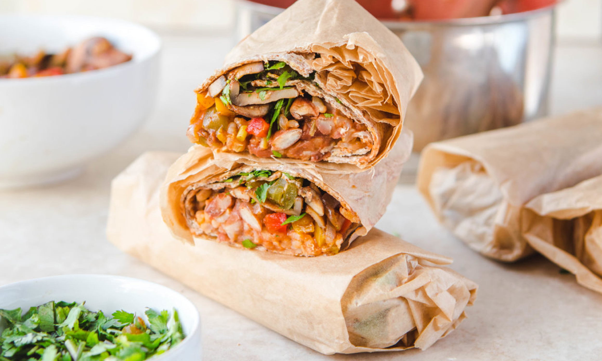
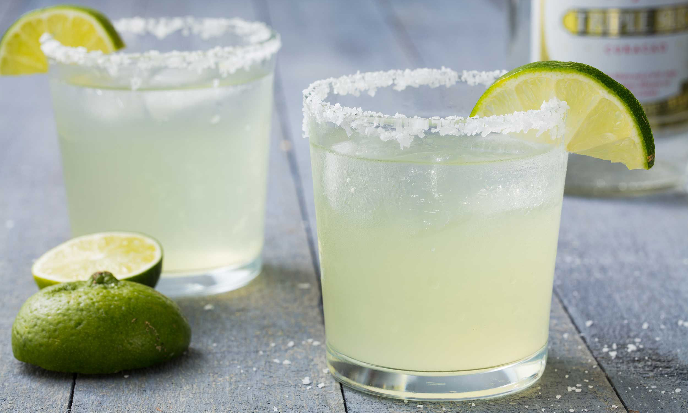

Alejandra's
Visalia California's Only Premium Mexican Restaurant


314 W. Main St. Visalia, Ca. 93291
Monday – Thursday 10:00 AM – 9:00 PM
Friday 10:00 AM – 10:00 PM
Saturday 9:00 AM – 10:00 PM
Sunday 9:00 AM – 9:00 PM
If you’re in the mood for the best taquitos, enchiladas, or tacos in town, you have come to the right place. Excite your palate with our unique offerings that bring to life the vibrant flavors of Mexico!
At Alejandra’s Restaurant, we offer the finest, most authentic and fresh Mexican food that you can find at a Mexican restaurant in Visalia CA. Since 1993, we have been serving Visalia customers just like you and invite you to experience the fun atmosphere and authentic cuisine for yourself.
We provide a laid-back atmosphere to complement the fiesta in your mouth! As an award-winning restaurant, we offer dishes that cannot be found in other Mexican restaurants in Visalia, CA.
Drop by today and experience Mexican food at its best
At Alejandra’s Restaurant, our fine Mexican cuisine truly is the best in the industry. Our menu items are not just your run-of-the-mill, fast food tacos, but are made with authentic Mexican recipes that will satisfy your taste buds. Our cooks have years of experience and know what it takes to make a genuinely authentic Mexican meal.
Additionally, we use the finest ingredients to ensure that your food is fresh and tasty every time. From our extra-hot chilis to our tasty tortillas, each part of your meal is made with utmost care. When you dine at Alejandra’s Restaurant, you can be sure that all of our dishes are made by cooks who are passionate about Mexican food.
We understand that our customers each have specific tastes when it comes to Mexican food, which is why we offer an array of dishes suited for the whole family. Some of our menu specialties available in both our Mexican restaurants include:
No matter what you are in the mood for, we will make it our specialty, because we want you to have the best experience when you dine at Alejandra’s Restaurant. We're there for all those who are looking for Mexican specials can fulfill their cravings.
We offer Mexican food take-out if you want to spend a quiet evening enjoying dinner at home. Are you planning a special event or celebration? Contact us today to get more information about our catering services.
To experience the finest food, most enjoyable atmosphere, and friendliest service, come to the best choice among Mexican restaurant in Visalia, CA today.
To learn more about Alejandra’s Restaurant, or for more menu information, visit our contact page or contact us today at (559)636-3215